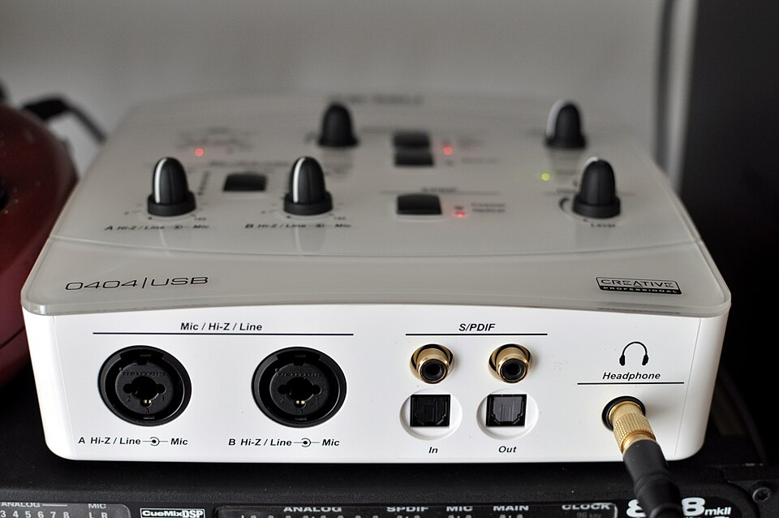

E-MU Tracker Pre
Stereo USB playback and recording, with software output volume and mute.
Audio only. No exposed USB MIDI interface or physical MIDI ports.
INDEPENDENT · OPEN SOURCE · BUILT FOR ARM64
Apple Silicon macOS drivers for the E-MU Tracker Pre and E-MU 0404 USB. Keep the interface you know. Play, record, and make music again.
Current source version @VERSION@ · MIT licensed

Select the interface in macOS Sound settings and play music or open your recording app.
A user-space audio plug-in. No kernel extension, no disabling SIP, no reduced security.
Tracker Pre and 0404 USB can be connected and stream independently at the same time.
THE HARDWARE
Stereo USB playback and recording, with software output volume and mute.
Audio only. No exposed USB MIDI interface or physical MIDI ports.
Stereo USB playback and recording, plus DIN MIDI input and output through CoreMIDI.
Four-channel modes and S/PDIF are not currently exposed.
Targets Apple Silicon (ARM64) Macs, including M1, M2, M3 and M4 families. The current audio build targets macOS 14 or later; this is not a tested compatibility matrix for every Mac and macOS release. E-MU 0202 USB remains untested.
GET CONNECTED
You need an Apple Silicon Mac, Xcode command line tools, and Rust. These instructions build from source; they do not download a compiled installer.
Install Xcode command line tools with xcode-select --install and follow the Rust installation instructions.
git clone https://github.com/bbatarelo/emu-apple-silicon.git
cd emu-apple-silicon
make
make installThe installer asks for your administrator password and restarts audio and MIDI services. Quit audio apps first: audio on the Mac will briefly stop.
Open System Settings → Sound, choose E-MU Tracker Pre or E-MU 0404 USB, and start playback. Allow microphone access for apps you want to record with.
To remove the drivers, run make uninstall from the repository.
KEEP IT PLAYING
This is an independent community project, informed by E-MU's released sources and Wouter1's original E-MU driver project, with contributions from David Nadlinger. It is not an official E-MU product. See the reference material and provenance.
Include your interface, Mac model, macOS version, sample rate, and the installed driver version from build/bin/hal-check.